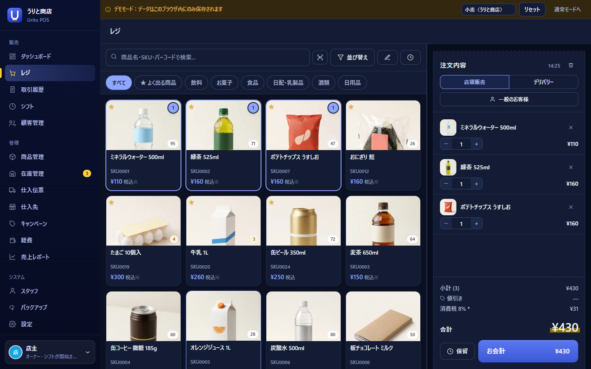

Sell simply.
Keep clear books.
An offline-first POS running directly inside the shop browser. Sales, inventory, shifts, customers, and thermal receipts stay in local IndexedDB with zero hosting cost.


Explore 3 pre-seeded shop scenarios
Demo mode runs inside an isolated urito-demo database so store data stays untouched. Reset any time from the top banner.


From fast counter checkout to cross-border EC sync
Light and dark themes, keyboard-first navigation, and unified in-store + online inventory tracking.



Built-in Japan Qualified Invoice & Tax Compliance
All prices and taxes use strict integer minor-unit math with configurable floor, round-half-up, or ceiling rules.
- Per-product Standard (10%), Reduced (8%), or Exempt tax categories with automatic eat-in switching
- Prints Qualified Invoice ID (
T+ 13 digits) and※markers on 80mm and 58mm thermal rolls - Grouped tax breakdown (
10%対象/8%対象) directly on every customer receipt - Formal Ryoshusho view with revenue stamp box when total reaches ¥50,000+

Measured at 100,000 orders under 4x CPU throttling
Tested via headless Chromium CDP (Emulation.setCPUThrottlingRate: 4) across 3 scale tiers.
Incremental Rollup Tables
O(days) query time on dailyStats and dailyProductStats avoids full order scans on boot and reports.
Binary Image Split & LRU
Images live in productImages as resized 320px WebP blobs cached by a 300-entry LRU map.
Streaming Gzip Backups
500-row primary-key streaming via CompressionStream('gzip') plus incremental images/ folder sync.
Salted Offline PIN Auth
Browser WebCrypto PBKDF2-SHA256 hashing with 16-byte random salt and failed-attempt lockout.
Deterministic Offline PWA
Strict install precaching without swallowed errors and user-confirmed updates when cart has items.
Strict Size Budgets
Automated CI bundle budget checks keep initial JavaScript well under the 140 KB gzip ceiling.
| Dataset Tier | Cold POS Load | 6-Char Search | 10-Line Checkout | Checkout Image Reads | 1-Year Report Switch | Streaming Gzip · Heap |
|---|---|---|---|---|---|---|
| 200 products · 1,000 orders | 211 ms | 88 ms | 820 ms | 0 reads | 280 ms | 151 ms (80 KB) · 19.7 MB |
| 2,000 products · 20,000 orders | 225 ms | 80 ms | 1,109 ms | 0 reads | 299 ms | 1,216 ms (1.4 MB) · 37.4 MB |
| 5,000 products · 100,000 orders | 340 ms | 127 ms | 944 ms | 0 reads | 288 ms | 6,060 ms (7.2 MB) · 34.1 MB |
Three-stage feature roadmap
Driven directly from src/features/registry.ts and mirrored in the in-app status page.
Ready Today (Stable / Beta)
- Offline checkout, parked carts, debts & shifts
- Japan 8%/10% tax, invoice slips & Ryoshusho
- Shopify CSV import/export & EC SKU queue
- Streaming gzip backup & folder image sync
In Progress (WIP)
- Dedicated delivery order dispatch workflow
- Payment QR block on printed thermal receipts
Planned Next
- Shopline & Shopee CSV order/catalog presets
- Romaji incremental catalog search
MIT Licensed · 100% Local Storage
Zero analytics, zero telemetry, zero external API calls. Data remains solely in the shop owner's browser IndexedDB and chosen backup folder.
npm install npm run dev # Dev server npm test # Vitest suite (112 tests) npm run build # Production PWA + SW npm run build:showcase # LP + /app bundle npm run build:netlify # Netlify deployment zip